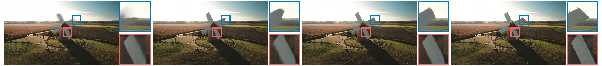
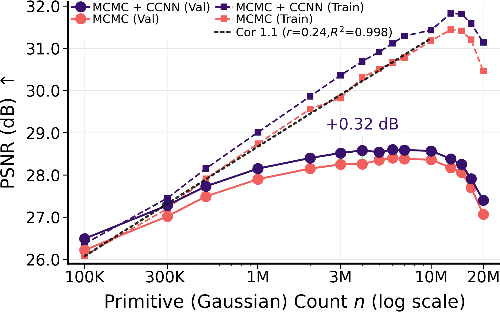
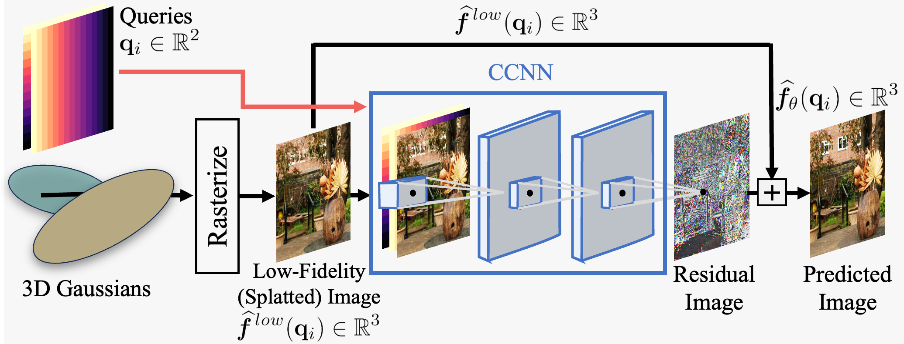
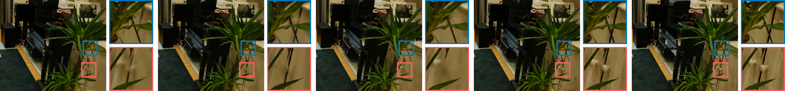
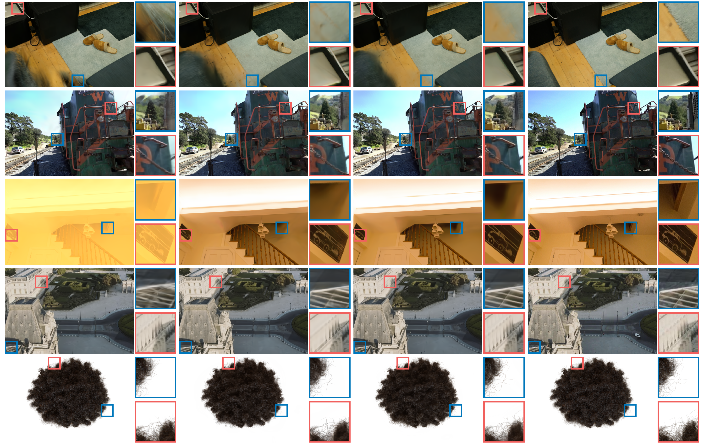
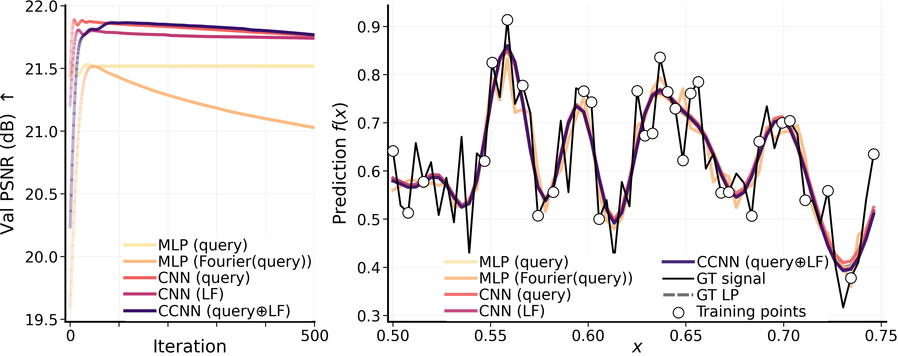
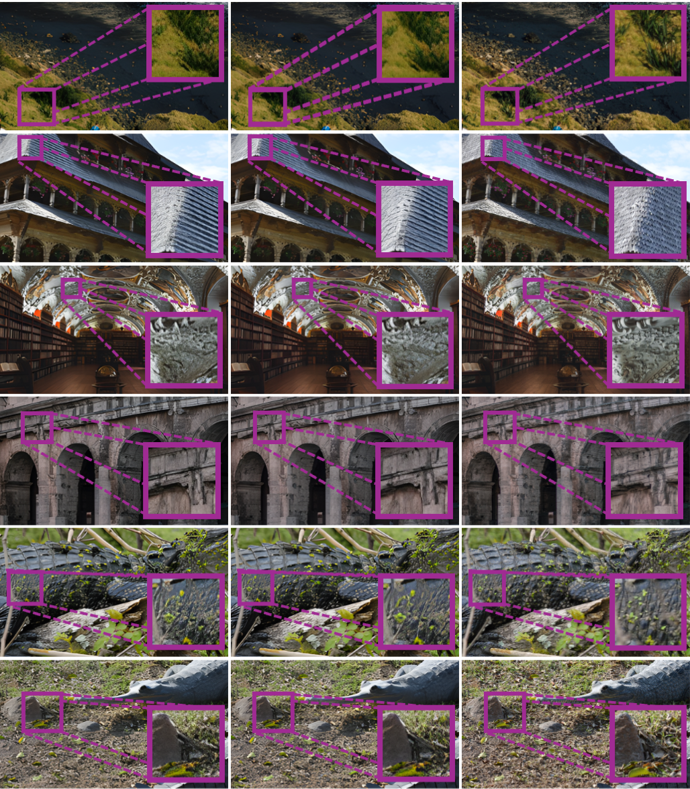

CC = Coordinate Queries + LF Signal + Convolution (Neighborhood)

GS+CCNN Architecture. CCNN convolves the coordinate queries \(\bm{q}_i\) and the LF splatted image \(\widehat{\bm{f}}^{low} (\bm{q}_i)\) to output the residual image, which is then added to the LF splatted image to get the final predicted novel view image \(\widehat{\bm{f}}_\theta (\bm{q}_i)\) in training and inference.

NVS Quantitative Results. Adding CCNN outperforms all five baselines on all six datasets. Numbers are from respective papers.
| Method | Mip-NeRF 360 | Tanks & Temples | Deep Blending | OMMO | Shelly | NeRF Synthetic | ||||||||||||
|---|---|---|---|---|---|---|---|---|---|---|---|---|---|---|---|---|---|---|
| PSNR ↑ | SSIM ↑ | LPIPS ↓ | PSNR ↑ | SSIM ↑ | LPIPS ↓ | PSNR ↑ | SSIM ↑ | LPIPS ↓ | PSNR ↑ | SSIM ↑ | LPIPS ↓ | PSNR ↑ | SSIM ↑ | LPIPS ↓ | PSNR ↑ | SSIM ↑ | LPIPS ↓ | |
| EVER | 27.51 | 0.83 | 0.23 | — | — | — | — | — | ||||||||||
| Mip-NeRF† | 27.69 | 0.79 | 0.24 | 22.22 | 0.76 | 0.26 | 29.40 | 0.90 | 0.25 | — | — | — | ||||||
| Adaptive | — | — | — | — | 36.02 | 0.95 | 0.08 | 32.51 | 0.96 | 0.05 | ||||||||
| QFields | — | — | — | — | 37.29 | 0.95 | 0.07 | 31.00 | 0.95 | 0.07 | ||||||||
| Zip-NeRF | 28.54 | 0.83 | 0.19 | — | — | — | — | 33.69 | 0.97 | — | ||||||||
| Tex-GS | 27.35 | 0.83 | 0.19 | 24.26 | 0.85 | 0.17 | 28.33 | 0.89 | 0.36 | — | — | 33.24 | 0.97 | 0.04 | ||||
| 3D-HGS | — | 25.08 | 0.84 | 0.14 | 29.80 | 0.90 | 0.25 | — | — | — | ||||||||
| VDGS | 27.64 | 0.81 | 0.22 | 24.02 | 0.85 | 0.18 | 29.54 | 0.91 | 0.24 | — | — | 35.97 | 0.99 | 0.01 | ||||
| Revise | 27.70 | 0.82 | 0.22 | 24.10 | 0.86 | 0.18 | 29.64 | 0.91 | 0.30 | — | — | — | ||||||
| HyRF | 27.78 | 0.82 | 0.21 | 24.02 | 0.84 | 0.18 | 30.37 | 0.91 | 0.24 | — | — | — | ||||||
| Mip-Splatting | 27.79 | 0.83 | 0.20 | — | — | — | — | — | ||||||||||
| FreGS | 27.85 | 0.83 | 0.21 | 23.96 | 0.85 | 0.18 | 29.93 | 0.90 | 0.24 | — | — | — | ||||||
| MCMC* | 28.26 | 0.84 | 0.17 | 24.53 | 0.87 | 0.13 | 29.32 | 0.91 | 0.24 | 30.10 | 0.92 | 0.12 | 35.14 | 0.94 | 0.09 | 36.14 | 0.98 | 0.02 |
| MCMC + CCNN | 28.58 | 0.84 | 0.16 | 24.87 | 0.88 | 0.12 | 29.76 | 0.91 | 0.23 | 30.34 | 0.92 | 0.12 | 35.57 | 0.95 | 0.09 | 36.58 | 0.98 | 0.02 |
| NHT* | 29.04 | 0.85 | 0.17 | 25.72 | 0.88 | 0.12 | 30.17 | 0.91 | 0.25 | 31.50 | 0.93 | 0.12 | 37.64 | 0.96 | 0.06 | 33.19 | 0.97 | 0.04 |
| NHT + CCNN | 29.19 | 0.85 | 0.17 | 25.79 | 0.88 | 0.12 | 30.64 | 0.92 | 0.24 | 31.74 | 0.93 | 0.11 | 37.67 | 0.96 | 0.06 | 33.33 | 0.97 | 0.04 |


1D Regression Results. CCNN outperforms MLP-based architectures including Fourier encodings in regressing high-fidelity signals. This simple experiment compares networks which take the 1D queries and low-fidelity (LF) signal as input to predict the high-fidelity 1D signal.

SR Results of DIV2K Val images. Adding CCNN to Real-ESRGAN faithfully reconstructs details in various regions and results in higher fidelity synthesis visually. We highlight the differences in inset figures
"We stand on the shoulder of giants. (William of Conches, 1123)"
There are probably many more by the time you are reading this.
@article{kumar2025ccnn,
title={Beyond Primitive Bloat: High-Fidelity Gaussian Splatting with Coordinate-Convolution Neural Network},
author={Kumar, Abhinav and Aumentado-Armstrong*, Tristan and Valkov*, Lazar and Sharma, Gopal and Levinshtein, Alex and Grzeszczuk, Radek and Kumar, Suren},
journal={arXiv preprint arXiv:2512.12898},
year={2025}
}